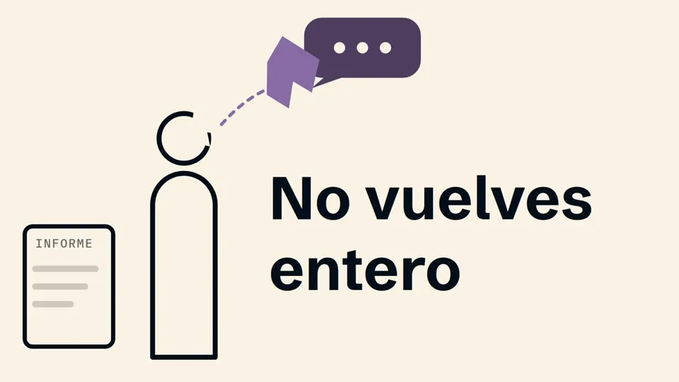

MenteEpisodio 311 de noviembre de 20265:13
Por qué no puedes concentrarte (y no es por el móvil)
¿Por qué no puedes concentrarte?

Al pulsar «Ver aquí» se carga el reproductor de YouTube, en su modo de privacidad mejorada.
Una acción para esta semana
Antes de cambiar, apunta dónde lo dejas.
La idea
Qué es el residuo de atención
¿Por qué no puedes concentrarte? No es solo el móvil: cada vez que cambias de tarea, una parte de tu atención se queda en la anterior.
En este vídeo: el residuo de atención que midió Sophie Leroy, por qué bastan menos de tres segundos para perder el hilo, por qué con interrupciones vamos más rápido pero más tensos, cuántas veces nos interrumpimos nosotros mismos y una sola acción para la próxima vez que cambies de tarea: antes de cambiar, apunta dónde lo dejas.
Tema
Etiquetas
- concentración
- atención
- interrupciones
- multitarea
Seguir leyendo
El guion · 797 palabras
Lo que dice el vídeo
El texto del vídeo, tal cual, por capítulos. Pulsa un minuto para verlo en YouTube desde ahí.
0:00Un mensaje en medio del informe
Pablo está terminando un informe. Le llega un mensaje. Lo mira y contesta.
Y en medio minuto ya está otra vez con el informe. Pero no ha vuelto entero. Una parte de él sigue en el mensaje.
0:16Cambiar de tarea no es gratis
Cambiar de tarea no es gratis. Cuando pasas de una cosa a otra, tu atención no cambia de golpe: una parte se queda atrás. Y como no se ve, no la cuentas.
0:28Tu atención se queda en lo que dejas
Residuo de atención: así lo llamó Sophie Leroy, en dos mil nueve. En sus experimentos, unas personas dejaban a medias un ejercicio de palabras y pasaban a otra tarea: evaluar el currículum de un candidato. Su cabeza seguía en el ejercicio.
Reconocían antes las palabras que habían dejado a medias, y evaluaban peor el currículum. Lo que se dejaba a medias seguía tirando de ellos. El residuo era menor en quien había terminado la primera tarea con prisa, porque la había cerrado del todo.
En «Céntrate», Cal Newport saca la consecuencia: hasta un vistazo rápido al correo deja tu atención repartida.
1:03Basta un momento
Y no hace falta que el cambio sea largo. En un experimento de Erik Altmann y sus colegas, en dos mil catorce, la gente repetía siete pasos, siempre en el mismo orden, como quien sigue una receta. De vez en cuando, la interrumpían para teclear un par de letras: menos de tres segundos.
Al volver, se equivocaban de paso el doble de veces: se saltaban uno, o repetían el que ya habían hecho. Habían perdido el sitio.
1:28Compensamos corriendo
Y cuando las interrupciones no paran, pasa algo más. En un experimento con correos, Gloria Mark y sus colegas interrumpían a la gente cada pocos minutos. Sorprendentemente, terminaban antes, pero escribiendo menos, y con el coste de hacerlo con más estrés, más frustración y más esfuerzo.
Compensamos las interrupciones corriendo. Y lo pagamos en tensión.
1:51Muchas veces nos interrumpimos solos
¿Y cada cuánto saltamos de una cosa a otra? Esta vez, fuera del laboratorio. En sus estudios de campo, Gloria Mark midió cuánto tiempo pasan los trabajadores de oficina en una pantalla del ordenador antes de saltar a otra.
En dos mil tres, eran unos dos minutos y medio. Entre dos mil dieciséis y dos mil veinte, ya solo unos cuarenta y siete segundos. No es que la atención dure cuarenta y siete segundos.
Es lo poco que la dejamos quieta. Y no siempre nos interrumpen. Muchas veces, nos interrumpimos nosotros mismos.
Nadie ha interrumpido a Pablo. Se acuerda de que tenía que contestar a alguien, y abre el correo. En el libro «Inmune a la distracción», Nir Eyal lo explica así: casi siempre nos distraemos para escapar de algo incómodo, no por culpa del móvil.
2:38La información se paga con atención
Y nunca había habido tanta información compitiendo por esa atención. Herbert Simon lo explicó en mil novecientos setenta y uno: la información no es gratis; se paga con la atención de quien la recibe. Con la tuya.
Por eso, cuanta más información te llega, menos atención te queda para cada cosa. Y cada notificación es una invitación a cambiar de tarea.
3:03El precio de cambiar
Este es el mapa completo: el precio de cambiar. Cada vez que cambias de tarea, pagas dos veces. Pagas el rato que dura el cambio.
Ese precio se ve. Y pagas con la atención que se queda atrás: lo siguiente te sale peor, al volver pierdes el hilo, y vas más tenso. Ese precio no se ve.
Un cambio cuesta poco. Pero si cambias cuarenta veces al día, lo pagas cuarenta veces.
3:31Apunta dónde lo dejas
Entonces, ¿qué haces cuando tienes que cambiar? Una sola cosa. Antes de cambiar de tarea, escribe una línea: dónde lo dejas, y qué harás al volver.
Un plan para retomar. Sophie Leroy y Theresa Glomb lo probaron en dos mil dieciocho: con ese minuto de nota, el residuo bajaba, y la tarea nueva salía mejor. No hace falta más: «Lo dejo en la conclusión.
Al volver, las cifras de marzo». Así, al volver, ya sabes dónde estabas. Y si puedes terminar lo que tienes entre manos antes de cambiar, termínalo: una tarea terminada deja menos atención atrás que una a medias.
4:11Que espere a su hora
Y lo que puede esperar, que espere a su hora. Mirar el correo solo tres veces al día: Kostadin Kushlev y Elizabeth Dunn lo probaron en dos mil quince, en un estudio para evaluar los efectos de poner límites en el chequeo de los correos. Costaba cumplir el límite diario, pero el estrés bajaba.
Y cuando la interrupción eres tú, el mismo papel sirve: apunta lo que ibas a mirar, y sigue con lo tuyo. Seguirá ahí cuando acabes.
4:40Lo que te llevas
Para terminar, lo que te llevas de este vídeo. Una idea: cambiar de tarea no es gratis; una parte de tu atención se queda atrás. Una pregunta: ¿cuántas veces has cambiado de tarea en la última hora?
Una acción: antes de cambiar, apunta dónde lo dejas.
5:13 · 11 capítulos
Capítulos, a escala
La línea es el vídeo entero; cada marca, un capítulo en su minuto.
- 010:00Un mensaje en medio del informe
- 020:16Cambiar de tarea no es gratis
- 030:28Tu atención se queda en lo que dejas
- 041:03Basta un momento
- 051:28Compensamos corriendo
- 061:51Muchas veces nos interrumpimos solos
- 072:38La información se paga con atención
- 083:03El precio de cambiar
- 093:31Apunta dónde lo dejas
- 104:11Que espere a su hora
- 114:40Lo que te llevas
En redes
La idea, en un minuto
Piezas cortas y completas en sí mismas, para verlas donde estés.
De dónde sale
Libros y fuentes
Libros
- Céntrate (Deep Work)Cal Newport · Península, 2022
- Inmune a la distracciónNir Eyal · Península, 2025
Estudios y fuentes
- Leroy (2009). Why is it so hard to do my work? The challenge of attention residue when switching between work tasks. Organizational Behavior and Human Decision Processes · doi.org/10.1016/j.obhdp.2009.04.002
- Leroy y Glomb (2018). Tasks interrupted: how anticipating time pressure on resumption of an interrupted task causes attention residue… Organization Science · doi.org/10.1287/orsc.2017.1184
- Altmann, Trafton y Hambrick (2014). Momentary interruptions can derail the train of thought. Journal of Experimental Psychology: General · doi.org/10.1037/a0030986
- Mark, Gudith y Klocke (2008). The cost of interrupted work: more speed and stress. CHI 2008 · doi.org/10.1145/1357054.1357072
- Mark, Iqbal, Czerwinski, Johns y Sano (2016). Neurotics can't focus: an in situ study of online multitasking in the workplace. CHI 2016 · doi.org/10.1145/2858036.2858202
- Mark, González y Harris (2005). No task left behind? Examining the nature of fragmented work. CHI 2005 · doi.org/10.1145/1054972.1055017
- Dabbish, Mark y González (2011). Why do I keep interrupting myself? Environment, habit and self-interruption. CHI 2011 · doi.org/10.1145/1978942.1979405
- Kushlev y Dunn (2015). Checking email less frequently reduces stress. Computers in Human Behavior · doi.org/10.1016/j.chb.2014.11.005
- Herbert Simon (1971). Designing Organizations for an Information-Rich World, en Greenberger (ed.), Computers, Communications, and the Public Interest (la cita, traducida por Ideario)
Sigue con
Otras ideas
-
ProductividadNº 1
5:2128 oct
El coste real de decir que síEl coste de oportunidad
Una acciónAntes de tu próximo sí, ponle precio a la alternativa.
-
ProductividadNº 2
-
AmbiciónNº 4
4:4718 nov
Abandonar a tiempo no es rendirse: la falacia del coste hundido
Una acciónAntes de seguir, pregúntate si lo empezarías hoy.


Newsletter gratuita
El ejercicio de cada vídeo, por escrito.
La idea de cada vídeo, con el ejercicio para aplicarla y los libros de donde sale.